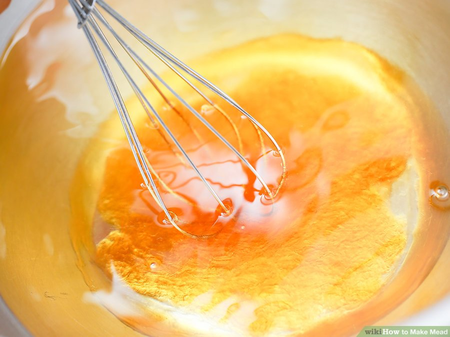
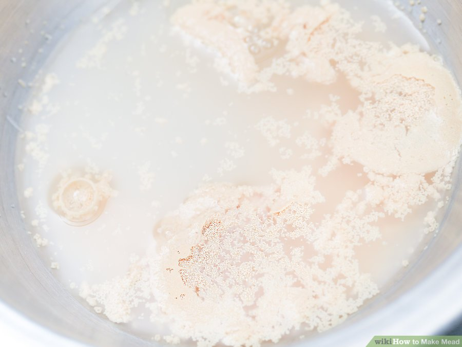
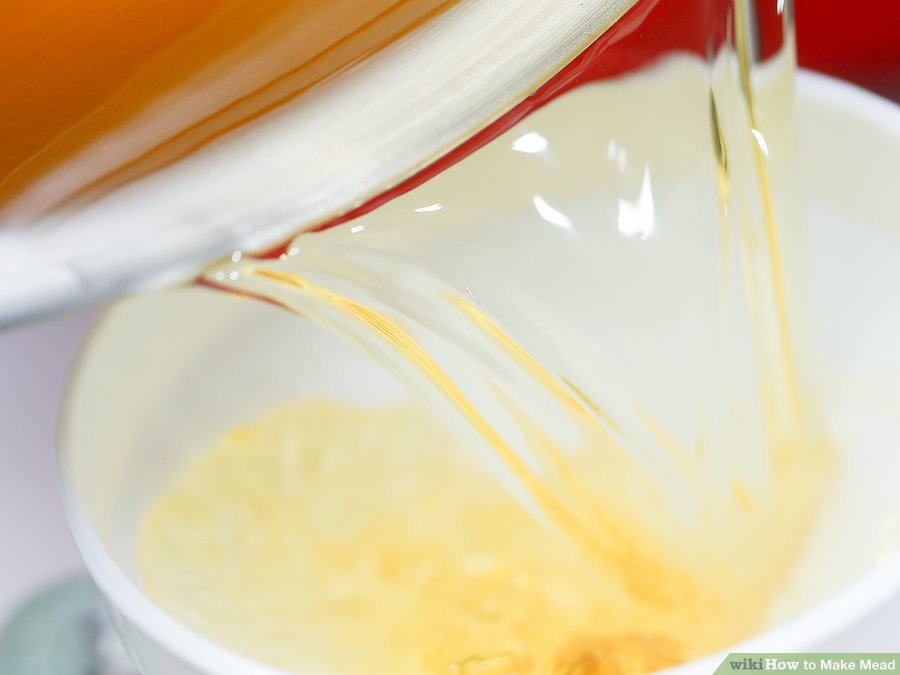
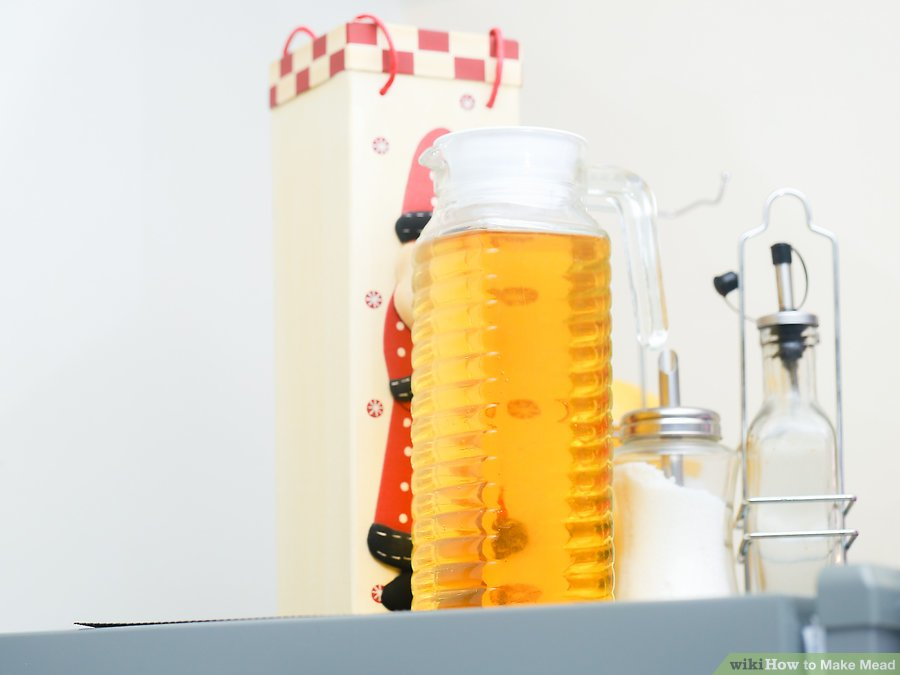
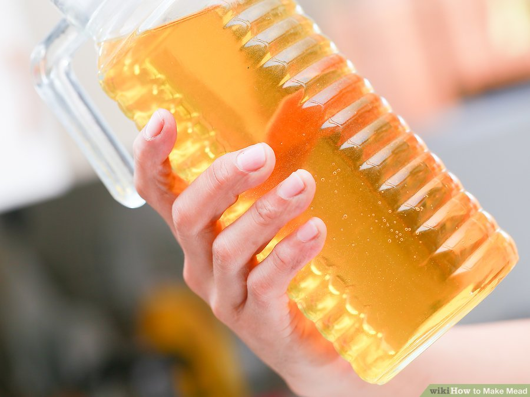
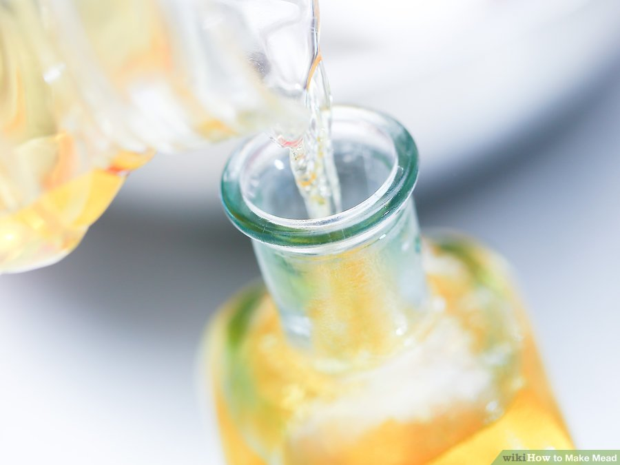
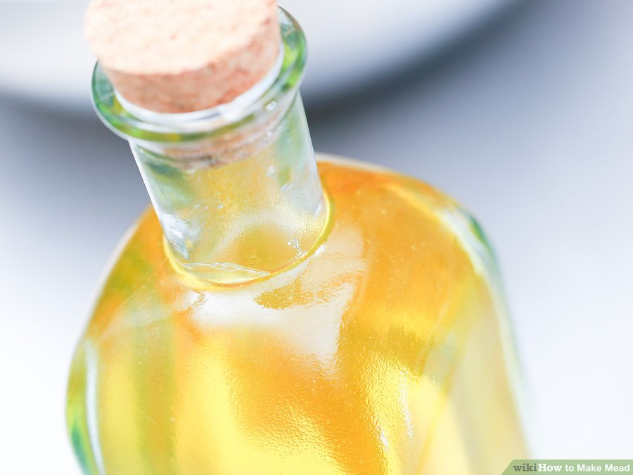

When you mix water and honey and ferment it with yeast, you get mead, an alcoholic drink often referred to as "honey wine". There are over 30 different kinds of mead.[1] This article will give you a simple recipe to use.
- Gather and sanitize all the items listed in the "Things You'll Need" below.
Anything that will touch the mead-in-the-making should be sanitized first. The environment you are creating to encourage fermentation can also encourage the growth of any microorganisms left behind from inadequate sanitation. You can use a weak bleach solution (remember to rinse well) but it is better to use a sanitizing solution that can be found at any beer or wine-making store (and online).

- Mix approximately 3.5 pounds honey with 1 gallon (3.8 L) distilled water.
DO NOT HEAT OR BOIL. There is no need to do this with an FDA regulated honey and clean drinking water. Boiling used to be done to drive off germs and bacteria in the water; honey is naturally anti-bacterial.
- This mixture, by the way, is called "must".
- Adding fruits or spices to the must will drastically change the flavour, and just about anything can go with a mead. It's really fun to experiment with flavours as a home-brewer!
- How to Liquify Honey
- How to Verify the Purity of Honey

- Rehydrate your chosen yeast per the manufacturer's directions then add it to your must.

- Put in a large container with plenty of room for fermentation to occur.
If there isn't enough space, a vigorous ferment can escape and cause a mess. You'll want to prevent air from getting into the container, but carbon dioxide needs to be able to escape. One way to do this is to poke a few holes in a balloon and then stretch it over the mouth of the bottle. Secure it by putting a rubber band or tape around it. This, however, is not a very good way to seal your mead as you can not add nutrients or aerate very well with the balloon in place, requiring the balloon to be replaced several times. The best method is to purchase an airlock from a local brew store or online as they are reusable, sanitizable, and won't disintegrate over time.

- Put in a large container with plenty of room for fermentation to occur. This information should be published by the manufacturer. If you have a hydrometer and know the starting gravity of your must, you can determine the sugar breaks of your fermentation. To determine your three sugar breaks, take your original gravity, determine what your final gravity should be based on the ABV tolerance of your yeast, then break that total number into thirds. Aerate (introduce oxygen) at least once daily during the first sugar break, the more times a the better.

- There are a few different ways to know when the mead is done fermenting:[2]
- The most accurate way to know is to measure the specific gravity with a hydrometer when you first mix it, then measure it every two weeks. The chosen yeast has a published ABV tolerance, and the hydrometer reading can be used to determine what the final gravity of the mead should be. When the mead reaches this gravity, wait a minimum of 4-6 months before bottling to ensure all CO2 that was in suspension in the mead has degassed. If the mead has not properly degassed and too much CO2 for the rating of the type of bottle the mead is bottled in is transferred, there is a risk of bottle explosion with temperature swings.
- Wait at least 8 weeks. The amount of time it takes for the mead to ferment will depend on a variety of factors, but 8 weeks should be enough time for most scenarios.
- If you're using an airlock, wait until 3 weeks after it stops bubbling.

- Once the fermentation has completed, transfer your mead to a container with little to no headspace for aging. The less surface area that oxygen can get to, the better. Siphoning is the best way to go so that you leave as much sediment behind as possible. The longer you wait, the better your mead will be, an average wait time is 8 months to a year for a home brewer.

- Transfer the mead into bottles, seal, and store in a cool dark place. Your mead is now drinkable, but it is even better when aged even longer.